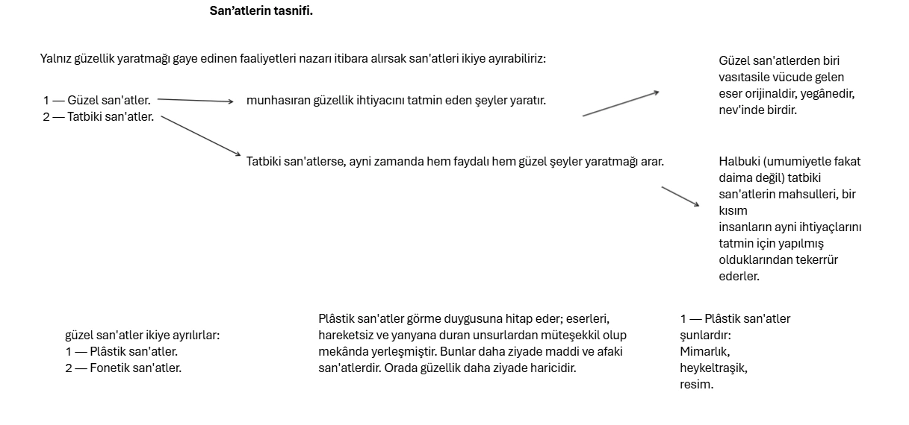
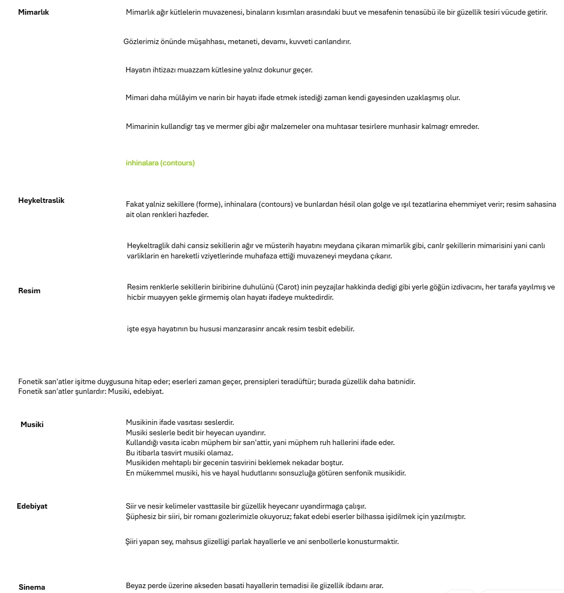
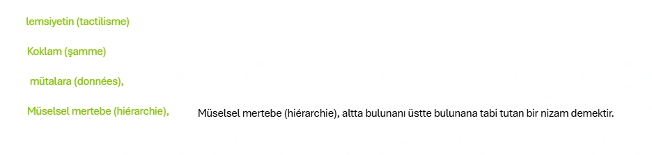

ÜÇÜNCÜ KISIM
Rönesansın bu büyük san'atkârları dehalarını muhtelif san'atlerde göstermişlerdir.
Tasnif Neden Kıymetlidir ?
beşeriyetin artistik faaliyeti hakkında umumi bir nazariye sahibi olmaktır. Bunda muvaffak olmak, kanaat veren bir san'at tasnifine malik olmakla mümkündür.
San’atlerin tasnifi.



Şiir Menşeini hemen munhasıran dehaya medyundur.
Diğer bazı mütefekkirler de, yüksek san'atin musiki olduğunu iddia etmişlerdir. Bu tez taraftarlarının ilk safında Schopenbaner görülmektedir. Musiki, mekânla hiçbir münasebeti olmaksızın yalnız zamanda mevcuttur. Bu karakteri gösteren yegâne san'attir.
Şiir, yalnız zaman ile mukayyet değildir.
Kelimeler tasavvur itibarile zamanda biribirini takip edebilirse de, onların mazrufları, manaları, maddi şeniyetten yani mekândan sudur eder.
Yalnız tahayyüli olan, mekân âlemine bigâne kalan musiki, bize derin hakikati ifşa eder, varlığın cevherini, mustarip iradeyi ve dünya ile esaslı surette ayniyetimizi gösterir.
Musiki mükemmel bir kurtarıcı san'attir. Musiki iyidir, çünkü bizi muvakkaten iradeden ve ıstıraptan azat ediyor.
Yegane kifayetsizliği, bizi hayattan lüzumu kadar ayırmamasıdır.
Hangi san'at yüksektir? Meselenin bütün fikirlerce sayanı kabul, kat't bir hal sekli alması son derece güçtür.
Diinyada Beethoven'nin dokuzuncu — senfonisinin finaline veya Wagner'in Tristan ve Yseult'inin ikinci aktına üstün higbir san’at eseri yoktur.
Psikolojik hayat, insanda ve hayvanda fiil ve harekete müteveccihtir,
Mahlük, kendisini - tehdit eden tehlikeleri bertaraf edip, esaslı ihtiyaçlarını tatmine muvaffak olur olmaz, hasbi bir surette enerjisinin fazlasını sarfetmeğe başlar.
San'at, menşeinde hususi ve mudil karakterler gösteren bir nevi oyun addedilebilir.
Kant «güzel»in hasbi bir neşe, bir memnuniyet, bir oyun, melekelerimizin bir ittihadı, mahsus muhayyilemizin ve zekâmızın bir ahengi olduğunu göstermişti.
Oynayan çocuk kendisine inuhayyel bir âlem yaratır ve o âlemi yarattığının farkında değildir. İstediği gibi mahlükat ve eşya değiştirir.
«San'at ahenktar bir realite yaratır, nizam ve kanunlarile ruhlara tahakküm eden bir âlem vücude getirir.
San'at oyundan daha mudil ve daha esaslı bir faaliyeti ifade eder.
ritim, san'at eserinin esaslı unsurudur. Ritim ise bizzat maşert (collectif) işten doğmuştur. Hareketin ve cehtin ritmi kendisini kulağa sedalara arzeder.
Dans ayni zamanda âlemşümuldür. Dünyanın hiçbir mıntakası, hiçbir zamanı yoktur ki dansı bilmesin. Dans hareket halinde olan san'atlerin asli şeklidir.
Sonraları tekâmül yolile biribirinden ayrılmaları mukadder olan musiki ve - şiir gibi iki san'ati rüşeym halinde ihtiva eder.
Daha sonra, şekillerin ve renklerin tasvir ve temsilleri haricilesir, vücutten eşyaya geçer; bundan da tezyini san'at, heykeltraşlık ve resim vücude gelir.
semiye (clan)
Dinler san'atlere kat'i bir hamle verdikleri anlaşılır.
Ribot'nun hakkı var; insan «Bedii; bir hayvan» dır.
Sihir, iptidai insanlara, içinde san'atin inkişaf ettiği bir melce olmuştur.
Dini mimarî (mezarlar, matemhane olan türbeler, mabetler) şehirlerin mimarisine takaddüm etmiştir.
Şiirin muhtelif şekilleri, dini tagannilerden çıkmıştır.
Kadim Yunanistanda bile muhtelif san'at şekilleri dinden doğmuştur.
Dinin güzel san'atler üzerindeki tesirini anlamak için, ilhamını dinden alan edebi eserlerin ve müzelerdeki heykellerin, resimlerin, çokluğunu müşahede etmek kâfidir. Bununla beraber, muhtelif san'at şekilleri bir lâdintlik istikametinde tekâmül etmiştir.
tahallüf (différenciation)
Güzel san'at ferdileştiği nispette an'anenin tahakkümünden kurtulur.